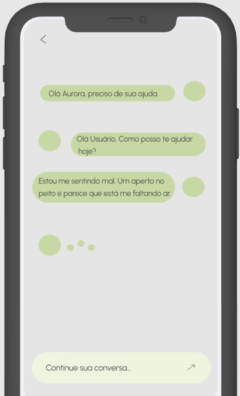

A Saúde Mental dos Jovens Precisa de Cuidado
É muito comum jovens enfrentarem questões críticas sozinhos e não conseguirem verbalizar. Isso se dá por vários fatores, dentre eles, a ausência de uma rede de apoio de conforto.
Transformando a saúde mental com tecnologia e empatia.
É muito comum jovens enfrentarem questões críticas sozinhos e não conseguirem verbalizar. Isso se dá por vários fatores, dentre eles, a ausência de uma rede de apoio de conforto.
A OMS diz que 1 em cada 7 jovens sofrem com transtornos mentais, e 75% dos casos iniciam antes dos 24 anos de idade.
No Brasil, a PeNSE/IBGE apontou que 28% dos adolescentes sentem tristeza constantemente.
A UNICEF relatou um aumento global de 25% nos casos de ansiedade e depressão consequentes da pandemia de 2020.
Estudos da Universidade de Harvard mostram que ferramentas digitais podem reduzir em até 50% o agravamento de transtornos mentais.
Na era digital, é crucial tomarmos medidas que façam os jovens participarem e se identificarem.
O relatório da McKinsey & Company destacou que o uso e procura por apps de saúde mental e bem-estar triplicou desde 2020.
A Aurora é desenvolvida com modelos avançados de Processamento de Linguagem Natural (NLP), ela é capaz de interpretar tons emocionais e responder de forma empática e personalizada. Com conversa inteligente, suporte seguro com interações anônimas e recomendações profissionais. Tudo para oferecer suporte emocional e ferramentas práticas para gerenciar a saúde mental dos jovens.
O Aura foi projetado para causar um impacto real, se alinhando aos Objetivos de Desenvolvimento Sustentável 3 e 10, promovendo o bem-estar ao ofertar suporte acessível e reduzindo as desigualdades ao conectar jovens de baixa renda a atendimentos gratuitos.